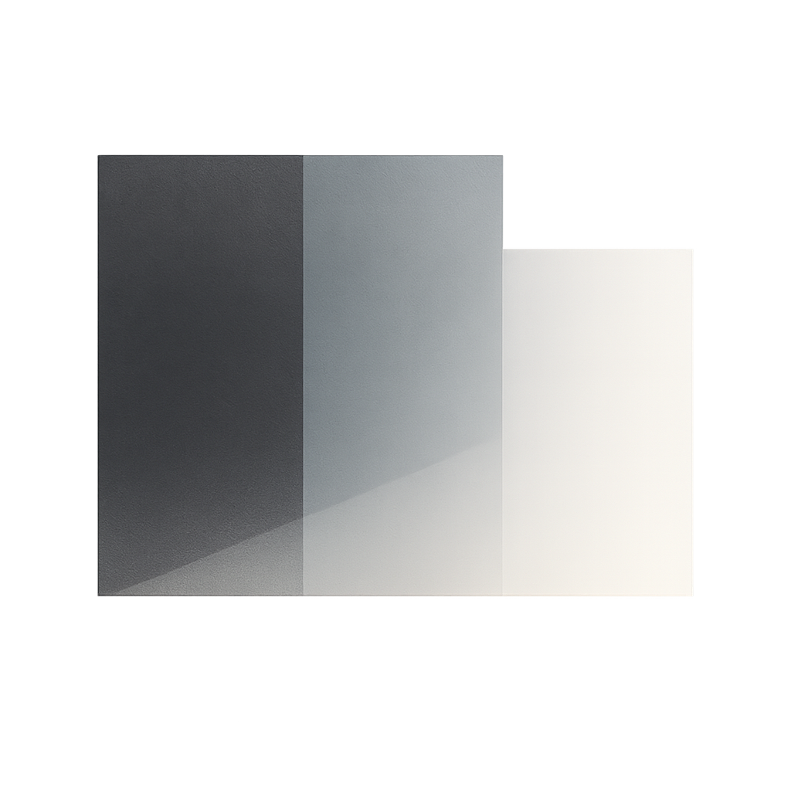

Gradient
A proposal for a layered context architecture
Architectural patterns for building maintainable Claude Code plugins through smooth layer transitions and zero duplication.
███▓▓▒▒░░░░ SPECS (The WHAT - Normative)
███▓▓▒▒░░ CONTEXT (The HOW - Applied)
██▓▓▒▒ PROMPTS (The ACTION - Orchestration)
Quick Start
One-Line Installation (Claude Code Context)
bash -c "$(curl -fsSL https://raw.githubusercontent.com/daviguides/gradient/main/install.sh)"
Installs Gradient specifications to ~/.claude/gradient/ and loads context into your Claude Code environment.
Plugin Installation (Claude Code Plugin)
git clone https://github.com/daviguides/gradient.git
cd gradient
./install.sh
Verify:
ls ~/.claude/gradient/
# Should show: gradient/spec/, context/, prompts/, commands/, agents/, scripts/
Why Gradient?
Problems Solved
Before Gradient:
- Context files repeating specification content
- Redundant explanations across multiple files
- Unclear boundaries between specs, context, and prompts
- Maintenance burden when changes require updates in multiple places
- Token waste from duplicated content
With Gradient:
- Zero duplication through Single Source of Truth (SSOT)
- Clear responsibilities with smooth layer transitions
-
Reference-based composition using
@syntax - Thin orchestrators that load rather than duplicate
- Efficient token usage and easy maintenance
What is Gradient?
Gradient is an architectural framework for organizing Claude Code plugins and context injection systems.
Core Concept
Smooth transitions, not rigid boundaries:
- SPECS → CONTEXT: From rules to application
- CONTEXT → PROMPTS: From patterns to action
- Like a visual gradient where colors dissolve into each other
Architecture Layers
7 Layers:
- SPECS - Normative definitions (THE WHAT)
- CONTEXT - Applied knowledge (THE HOW)
- PROMPTS - Orchestration (THE ACTION)
- COMMANDS - API entry points
- AGENTS - Specialized contexts
- SCRIPTS - Automation efficiency
- HOOKS - Event-driven workflows
Documentation
Tools & Integration
Validation Scripts
# Validate @ references
bash scripts/validate-references.sh <project-path>
# Detect duplication
bash scripts/detect-duplication.sh <project-path>
# Calculate metrics
bash scripts/calculate-metrics.sh <project-path>
Specialized Agents
# Architecture compliance review
@architecture-reviewer
Claude Code Commands
/load-gradient-context # Load architecture knowledge
Real-World Examples
Gradient emerged from patterns discovered in:
ymd-spec - YMD/PMD format specification semantic-docstrings - Python documentation standards code-zen - Zen of Python implementation guide
Key Metrics
| Metric | Target | Benefit |
|---|---|---|
| Duplication Ratio | ≤ 1.1 | Near-zero duplication |
| Reference Density (Prompts) |
|
Thin orchestrators |
| Command File Size | ≤ 5 lines | Clean API layer |
| Maintenance Points | 1 per concept | Update once, propagate everywhere |
Community
Contribute
Share your Gradient implementations and patterns:
Philosophy
“Architecture isn’t about rigid layers—it’s about smooth, intentional transitions.”
Code like a gradient: from normative specs through applied context to dynamic action, smoothly.
Get Started
Ready to eliminate duplication? Get Started →